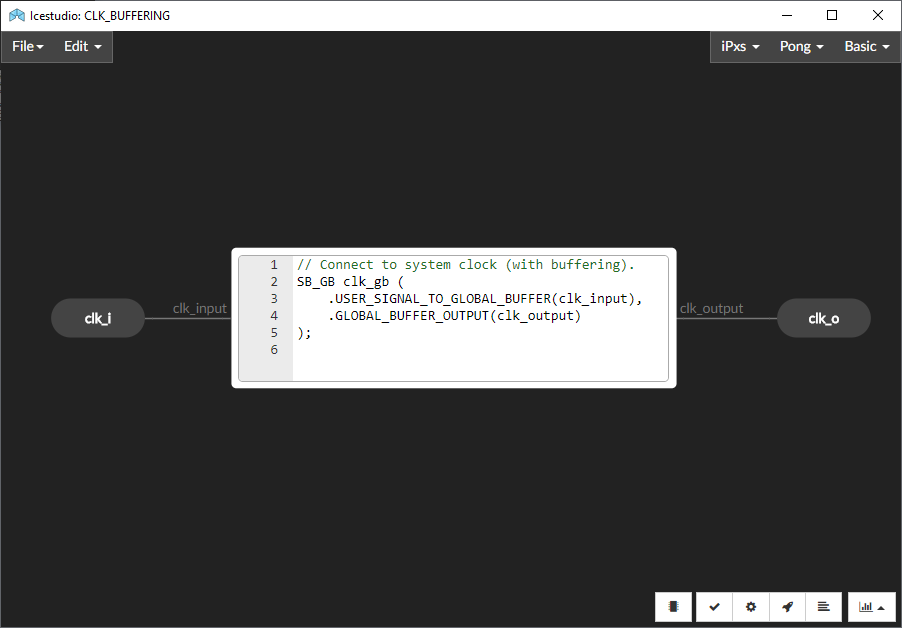
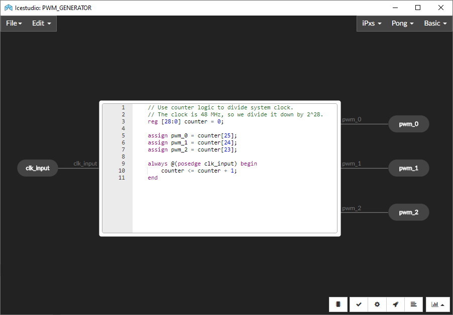
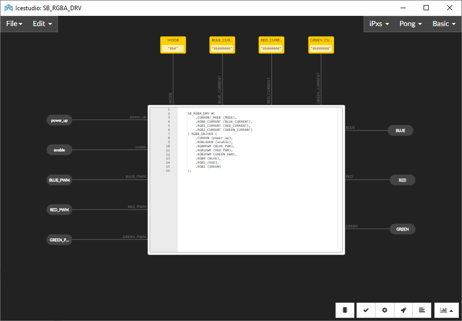
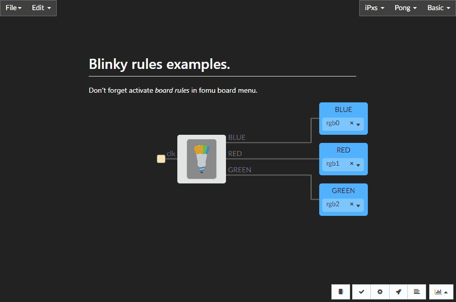

Fomu on IceStudio Nightly¶
Important
Fomu is currently not supported in the stable releases of IceStudio. Development or nightly releases need to be used.
“Hello world!” - Blink a LED¶
The canonical “Hello, world!” of hardware is to blink a LED. The
directory icestudio contains a Blinky example in ICE format.
Moreover, Blinky_BoardTop.ice wraps Blinky, showcasing how
to use the Design Under Test (DUT) as a black box.
Open Blinky_BoardTop.ice from Icestudio
and use the buttons at the botton:
Check that the selected board is the Fomu.
Click on the button with a ‘microchip’ icon, and a modal window will open.
There, select the device (UP5K) in the first dropdown list and the board (Fomu) in the second list.
Click on the Verify button for checking the design.
Click on the Build button for having the design exported to Verilog, synthesised, placed, routed and, finally, the bitstream generated.
Click on the Upload for sending the bitstream to the board.
After each of the steps is executed, the corresponding log can be shown through button View command output.
You should see the rainbow pattern in the Fomu as soon as the Upload step is finished:

However, that’s just the beginning of the trip…
Navigation¶
You can navigate the hierarchy of the design by double-clicking on the main
block. Go as deep as you want, until you find raw Verilog code. As you
can observe, ICE modules are fancy wrappers around the Verilog code from
verilog/blink.

Editing submodules is blocked by default, but you can unlock the feature with the red button at the botton left. Do the modifications you wish, then save the changes and go back to the top. There is a ‘Home’ button at the bottom left for jumping to the root of the design straightaway. From the top, you can verify, build and upload the design again.
You can also open or save each of the blocks as an independent project.
For instance, open Blinky.ice, instead of Blinky_BoardTop.ice:
{kind=link}
Modules are browsable, as shown in the screencast above:
  {kind=link}
{kind=link}
{kind=link}
Board rules¶
A feature in IceStudio Nightly named “board rules” allows predefining assignments for I/O pins. For instance, Fomu needs to disconnect its USB communication stack when writting raw HDL. Therefore, it is always necessary to define and set pins usb_dn, usb_dp and usb_dp_pu. Option board rules does so, allowing a cleaner graphical desing.
Open Blinky_BoardTop_rules.ice, which is the result of using this feature
in the Blinky example. As you see, USB pins need not to be defined explicitly:
{kind=link}
Instead, ensure that option board rules is activate in the board properties:
{kind=link}
As shown in the screencast, you can inpect the specific rules applied to each pin by using the “View board rules” button in the board properties window.
The same rules can be applied to modules lower in the hierarchy. For example, open
Blinky_rules.ice and compare with Blinky_rules.ice above:
{kind=link}
Hint
Find more info about features of IceStudio (such as collections or plugins) in the documentation.